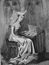

Şair ve edebiyat eleştirmeni Christine de Pizan (1363-1434) düşüncelerinin yaygın bir biçimde kabul görmesinden beş yüzyıl önce doğdu. Yazılarıyla, Fransız edebiyatında yaygın olan negatif kadın imgesine karşı mücadele etti. Ne var ki 20. yy’da yeniden keşfedilene kadar eserleri büyük ölçüde görmezden gelindi.

De Pizan Venedik’te doğdu. Babası, 5. Charles’ın (1338-1380) saray astroloğu olarak atanınca küçük bir çocukken Fransa’ya taşındı. on beş yaşında evlendi. 1389 yılında, henüz yirmi beş yaşındayken dul kaldı.
Kocasının ölümünün ardından üretken bir yazar olarak ön plana çıktı. Aşk şiirleri, dini kitaplar, eski mitolojiler üzerine yorumlar ve 5. Charles’ın biyografisi gibi çok çeşitli eserler kaleme aldı.
Ona asıl ününü kazandıransa 1405 yılında yazdığı The Book of the City of Ladies (Kadınlar Şehrinin Kitabı) isimli eseri oldu. Kitap yazarın, Orta Çağ edebiyatında yaygın olduğunu düşündüğü kadın düşmanlığını hedef alıyordu. Pek çok Fransız şiirinde kadınların her türlü entelektüel kapasiteden yoksun, zayıf ve günahkar varlıklar olarak ele alındıklarını yazdı. Özellikle Jean de Meun’un (1250-1305) Romance of the Rose’unu (Gülün Romansı), kadınları negatif bir biçimde betimlediği gerekçesiyle sert bir biçimde eleştirdi.
Döneminin cinsiyetçi eserlerini yeren Pizan şöyle yazar: “Nasıl olup da aralarında eğitimlilerin de bulunduğu bu kadar fazla erkeğin hem konuşurken hem de yazdıkları eserlerde kadınları ve onların davranışlarını aşağılamayı başarabildiklerini merak ediyorum.”
De Pizan alegorik bir şehir hayal eder: Kadınlar şehri. Kadınlar burada başarı ve zekaları ile takdir görmektedir. Kitapta üç ana karakter bulunur: Lady Reason (Leydi Akıl), Lady Justice (Leydi Adalet) ve Lady Rectitude (Leydi Doğruluk). Bunlar isimleriyle, kadınların hem değer verdikleri yargıları hem de özlemlerini dile getirirler.
Pizan Avrupa’nın ilk kadın yazarı olmamasına rağmen, yazarak geçimini sağlayan ilk profesyonel ve seküler kadın yazar olarak kabul edilmektedir. Son çalışması olan, Fransız kahraman Jan Darc’ı (1412-1431) anlatan şiiri 1429 yılında yayınlanmıştır. De Pizan’ın bundan beş yıl sonra öldüğü tahmin edilmektedir.
Ek Bilgiler
1- The Book of the City of Ladies, İngilizce’ye ilki 1521 yılında, ikincisi ise Earl Jeffrey Richards tarafından 1982 yılında olmak üzere iki kez çevrilmiştir.
2- İngiltere kralı 4. Henry (1366-1413) Pizan’ı sarayında yaşamaya davet etmiş, ancak Pizan bu teklifi reddetmiştir.
3- Pizan soyadı, babasının dünyaya geldiği İtalya’nın kuzeyindeki Pizzano köyünden gelmektedir.